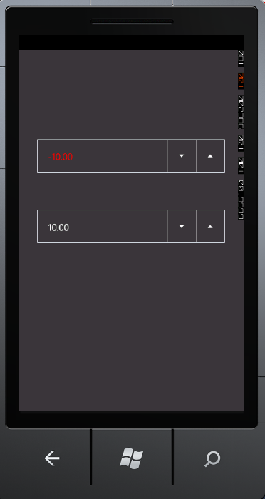

The NegativeForeground property specifies the foreground color for the input value when the input value is less than zero. The following code illustrates how to set foreground color for a negative value:
|
[XAML]
<syncfusion:NumericUpDown x:Name="NumericUpDown1" NegativeForeground="Green" /> |
|
[C#]
NumericUpDown numericUpDown = new NumericUpDown(); numericUpDown.NegativeForeground = new SolidColorBrush(Colors.Green); |

Figure 31: NegativeForeground = "Red"